정보처리기사(구) (2005-05-29 기출문제)
1과목: 데이터 베이스
1. SQL 명령어로 수행된 결과를 실제 물리적 디스크로 저장하는 SQL 명령은?
- ROLLBACK
- COMMIT
- GRANT
- REVOKE
(정답률: 85%)

2. 다음 영문의 괄호에 가장 적합한 것은?
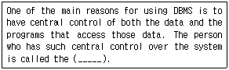
- Database Administrator(DBA)
- Application programmers
- Specialized users
- End users
(정답률: 83%)
3. "트랜잭션 결과 관련 있는 모든 연산들은 완전히 실행되거나 전혀 실행되지 않아야 한다."는 내용이 의미하는 트랜잭션의 요구 사항은 무엇인가?
- 일관성(consistency)
- 영속성(durability)
- 격리성(isolation)
- 원자성(atomicity)
(정답률: 66%)
4. 다음과 같은 일련의 권한 부여 SQL 명령에 대한 설명 중 부적합한 것은?
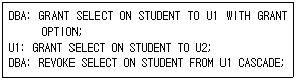
- U1은 STUDENT에 대한 검색 권한이 없다.
- DBA는 STUDENT에 대한 검색 권한이 있다.
- U2는 STUDENT에 대한 검색 권한이 있다.
- U2는 STUDENT에 대한 검색 권한을 다른 사용자에게 부여할 수 없다.
(정답률: 55%)
5. 다음 영문의 괄호 안에 적합한 수식의 표현은?
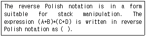
- A B + C D + *
- A B + C D * +
- + A B + C D *
- * + A B + C D
(정답률: 62%)
6. 모든 릴레이션이 갖는 특성이 아닌 것은?
- 중복된 튜플을 포함할 수 있다.
- 튜플들 간에는 위에서 아래로의 순서가 없다.
- 속성들 간에는 왼쪽에서 오른쪽으로의 순서가 없다.
- 모든 속성값은 원자값이다.
(정답률: 79%)
7. 관계 해석(Relational Calculus)을 옳게 설명한 것은?
- 연산들의 절차(sequence)를 사용하여 데이터를 가져온다.
- 계산 수식을 사용하여 어떤 데이터를 가져올지 명시한다.
- 기본적인 연산자로 UNION, INTERSECTION, DIFFERENCE를사용 한다.
- 전체 관계를 조작하는데 사용되는 연산들의 집합이다.
(정답률: 37%)
8. 병행 제어(Concurrency Control) 기법 중에서 잠금(locking) 기법으로 가장 최소 단위의 병행 제어는 어떤 것인가?
- 페이지 차원(Page-level)의 잠금
- 행 차원(row-level)의 잠금
- 테이블 차원(table-level)의 잠금
- 필드 차원(field-level)의 잠금
(정답률: 55%)
9. 선형 구조가 아닌 것은?
- 배열(array)
- 스택(stack)
- 큐(queue)
- 트리(tree)
(정답률: 80%)
10. 해싱함수 중 주어진 키를 여러 부분으로 나누고, 각 부분의 값을 더하거나 배타적 논리합(XOR: Exclusive OR) 연산을 통하여 나온 결과로 주소를 취하는 방법은?
- 중간 제곱 방법(Mid-square method)
- 제산 방법(Division method)
- 중첩 방법(Folding method)
- 기수 변환법(Radix conversion method)
(정답률: 41%)
11. 데이터베이스 설계단계의 순서로 알맞은 것은?
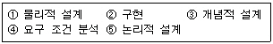
- ③-⑤-④-①-②
- ④-①-③-⑤-②
- ④-③-⑤-①-②
- ③-⑤-①-④-②
(정답률: 86%)
12. 다음에서 설명하는 데이터베이스 설계 단계는?
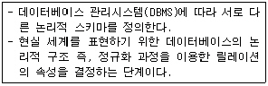
- 요구사항 및 분석단계
- 개념적 설계 단계
- 논리적 설계 단계
- 물리적 설계 단계
(정답률: 73%)
13. DBMS(DataBase Management System)의 설명으로 옳지 않은 것은?
- 종속성과 중복성의 문제를 해결하기 위해서 제안된 시스템이다.
- 데이터 모델링을 수행하고 데이터베이스 스키마를 생성한다.
- 응용 프로그램과 데이터의 중재자로서 모든 응용 프로그램들이 데이터베이스를 공유할 수 있도록 관리한다.
- 데이터베이스의 구성, 접근방법, 관리유지에 대한 모든 책임을 지고 있다.
(정답률: 33%)
14. SQL의 UPDATE 문에 대한 설명으로 옳은 것은?
- 새로운 튜플을 삽입할 때 사용한다.
- 테이블 전체를 UPDATE 하기 위해서는 반드시 WHERE 절을 사용하여야 한다.
- UPDATE 될 속성의 순서는 CREATE TABLE 에 명시되었던 순서이어야 한다.
- 튜플의 내용을 변경하는데 사용한다.
(정답률: 66%)
15. 릴레이션은 참조할 수 없는 외래키 값을 가질 수 없음을 의미하는 제약조건은?
- 개체 무결성
- 참조 무결성
- 보안 무결성
- 정보 무결성
(정답률: 81%)
16. 데이터 사전(data dictionary)에 대한 설명으로 부적합한 것은?
- 여러 가지 스키마와 이들 속에 포함된 사상들에 관한 정보도 컴파일 되어 저장된다.
- 데이터베이스를 실제로 접근하는데 필요한 정보를 유지, 관리하며 시스템만이 접근한다.
- 사전 자체도 하나의 데이터베이스로 간주되며, 시스템카탈로그(system catalog)라고도 한다.
- 데이터베이스가 취급하는 모든 데이터 객체들에 대한 정의나 명세에 관한 정보를 관리 유지한다.
(정답률: 67%)
17. 네트워크 데이터 모델에 대한 설명으로 옳지 않은 것은?
- CODASYL DBTG 모델이라고도 한다.
- m : n 의 관계 표현이 가능하다.
- 오너-멤버(owner-member) 관계를 가진다.
- 데이터 구조도가 트리(tree) 형태이다.
(정답률: 42%)
18. 다음과 같이 입력되는 레코드 입력 파일 R={26, 28, 32, 64, 75, 125, 138, 142, 158, 172, 185, 192, 201, 225, 238} 일 때, 이진 검색 방법으로 75를 찾을 경우 비교 횟수는?
- 3
- 4
- 5
- 6
(정답률: 56%)
19. 다음 두 릴레이션에서 외래키로 사용된 것은?(단, 밑줄 친 속성은 기본키)
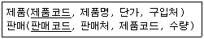
- 제품코드
- 제품명
- 판매코드
- 판매처
(정답률: 79%)
20. 데이터 모델의 구성요소가 아닌 것은?
- 논리적으로 표현된 데이터 구조
- 구성요소의 연산
- 구성요소의 제약 조건
- 물리적 저장 구조
(정답률: 60%)
2과목: 전자 계산기 구조
21. 기억 장치와 입출력 장치 간의 차이점이라 볼 수 없는 것은?
- 동작 속도의 차이
- 처리하는 정보 단위의 차이
- 동작의 자율성 정도
- 에러 보정 방식의 차이
(정답률: 54%)
22. 입출력 제어방식에 대한 설명으로 가장 거리가 먼 것은?
- 프로세서에 의한 입·출력 제어 방식으로 크게 동기방식과 비동기 제어방식으로 구분할 수 있다.
- 인터럽트 제어 방식은 프로세서에 의한 제어 방식으로 비동기 제어 방식이다.
- 프로그램 제어 방식은 전용장치 제어 방식으로 동기방식과 플래그 검사 방식으로 구분할 수 있다.
- 전용장치에 의한 제어 방식으로 DMA 방식과 Channel방식이 있다.
(정답률: 48%)
23. 주소 지정 방식(Addressing Mode)이 아닌 것은?
- 직접(Direct) 번지 방식
- 간접(Indirect) 번지 방식
- 즉시(Immediate) 번지 방식
- 임시(Temporary) 번지 방식
(정답률: 63%)
24. 0-주소 명령 형식에 필요한 것은?
- stack
- index register
- queue
- base register
(정답률: 76%)
25. 2진수 (10110)2을 그레이 코드로 변환한 것은?
- (11101)G
- (10110)G
- (10001)G
- (11011)G
(정답률: 55%)
26. fetch cycle에서 일어나는 micro instruction 이다. 시행순서가 옳은 것은? (단, MAR은 Memory Address Register이고 MBR은 Memory Buffer Register이며, PC는 Program Counter이고 OPR은 Operation Code Register이다.)
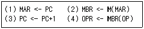
- 2→1→3→4
- 1→2→3→4
- 2→4→1→3
- 3→1→2→4
(정답률: 51%)
27. 다음 회로를 하나의 기호로 나타내면?
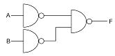
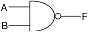
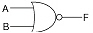
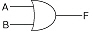
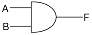
(정답률: 46%)
28. 연산자 기능에 대한 명령어를 나타낸 것 중 옳지 않은 것은?
- 함수 연산 기능 - ROL, ROR
- 전달 기능 - CPA, CLC
- 제어 기능 - JMP, SMA
- 입Χ출력 기능 - INP, OUT
(정답률: 45%)
29. 인터럽트 체제의 동작을 나열하였다. 수행 순서가 옳은 것은?
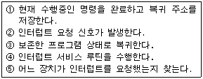
- ②→①→⑤→④→③
- ②→①→④→⑤→③
- ②→⑤→①→④→③
- ②→④→①→⑤→③
(정답률: 71%)
30. 인터럽트의 발생 요인이 아닌 것은?
- 정전
- 처리할 데이터 양이 많은 경우
- 컴퓨터가 제어하는 주변 상황에 이상이 있는 경우
- 불법적인 인스트럭션 수행과 같은 프로그램 상의문제가 발생한 경우
(정답률: 63%)
31. 연산 결과를 항상 누산기(Accumulator)에 저장하는 명령어 형식은?
- 0-주소 명령어
- 1-주소 명령어
- 2-주소 명령어
- 3-주소 명령어
(정답률: 62%)
32. 우선순위 인터럽트 운영 방식이 아닌 것은?
- LCFS(Last Come First Service)
- FCFS(First Come First Service)
- Masking Scheme
- Fixed Service
(정답률: 52%)
33. 연산 방식에 대한 설명 중 옳지 않은 것은?
- 직렬 연산 방식은 병렬 연산 방식 보다 시간이 많이 소요된다.
- 병렬 연산 방식은 직렬 연산 방식에 비해 속도가 느리다.
- 직렬 연산 방식은 hardware가 간단하다.
- 병렬 연산 방식은 hardware가 복잡하다.
(정답률: 58%)
34. CPU가 계속 flag를 검사하지 않고 데이터가 준비되면 인터페이스가 CPU에 입·출력을 요구하고 입·출력 전송이 완료되면 CPU는 수행 중이던 프로그램으로 되돌아가서 수행을 재개하는 입·출력 방식은?
- 프로그램된 I/O에 의한 방식
- DMA(Direct Memory Access)
- interrupt에 의한 방식
- register를 이용한 방식
(정답률: 48%)
35. 4096x16의 용량을 가진 RAM이 있다. 메모리 버퍼 레지스터(MBR)는 몇 비트의 레지스터인가?
- 8
- 16
- 32
- 4096
(정답률: 66%)
36. 출력 측의 일부가 입력 측에 궤환되어 유발되는 레이스 현상을 없애기 위해 고안된 플립플롭은?
- J-K 플립플롭
- M/S 플립플롭
- R-S 플립플롭
- D 플립플롭
(정답률: 38%)
37. 다음 그림과 같이 A, B 2개의 레지스터에 있는 자료에 대해 ALU가 OR 연산을 행하면 그 결과의 출력 레지스터 C의 내용은? (A:10110110 B:11001100)
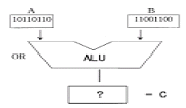
- 11101110
- 11111110
- 10000000
- 10110110
(정답률: 70%)
38. 주기억장치는 하드웨어의 특성상 주기억장치가 제공할 수 있는 정보 전달능력에 한계가 있는데 이 한계를 무엇이라 하는가?
- 주기억장치 전달(transfer)
- 주기억장치 접근폭(accesswidth)
- 주기억장치 밴드폭(bandwidth)
- 주기억장치 정보 전달폭(transferwidth)
(정답률: 58%)
39. 주소 설계시 고려할 점으로 옳지 않은 것은?
- 주소 공간과 기억 공간을 항상 종속시켜야 한다.
- 주소를 효율적으로 나타낼 수 있어야 한다.
- 프로그램이나 데이터가 그 컴퓨터 기억장치내의 어느 곳에 기억되어 있더라도 수행이 가능해야 한다.
- 주소 공간과 기억 공간을 독립시킬 수 있어야 한다.
(정답률: 68%)
40. 전자계산기의 중앙처리장치(CPU)는 4가지 단계를 반복적으로 거치면서 동작한다. 4가지 단계에 속하지 않는 것은?
- Fetch cycle
- Branch cycle
- Interrupt cycle
- Execute cycle
(정답률: 67%)
3과목: 운영체제
41. 세그먼테이션 기법에 대한 설명으로 옳은 것은?
- 각 세그먼트의 크기는 같다.
- 내부 단편화가 발생한다.
- 외부 단편화가 발생한다.
- 공유가 불가능하다.
(정답률: 47%)
42. 컴퓨터시스템에서 전송 정보가 오직 인가된 당사자에 의해서만 수정될 수 있도록 통제하는 것을 정보 보안에서는 무엇이라고 하는가?
- 기밀성
- 인증
- 가용성
- 무결성
(정답률: 58%)
43. 분산 운영체제에서 사용자가 원하는 파일이나 데이터베이스, 프린터 등의 자원들이 지역 컴퓨터 또는 네트워크 내의 다른 원격지 컴퓨터에 존재하더라도 위치에 관계없이 그의 사용을 보장하는 개념은?
- 위치 투명성
- 접근 투명성
- 복사 투명성
- 접근 독립성
(정답률: 71%)
44. 프로세스 제어블록(Process Control Block)에 대한 설명으로 옳지 않은 것은?
- 프로세스에 할당된 자원에 대한 정보를 갖고 있다.
- 프로세스의 우선순위에 대한 정보를 갖고 있다.
- 부모 프로세스와 자식 프로세스는 PCB를 공유한다.
- 프로세스의 현 상태를 알 수 있다.
(정답률: 67%)
45. 디스크 스케줄링 방법 중 LOOK 방식을 사용할 때 현재 헤드가 60 에서 50 으로 이동해 왔다고 가정할 경우 다음과 같은 디스크 큐에서 가장 먼저 처리되는 것은?
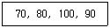
- 70
- 80
- 100
- 90
(정답률: 67%)
46. UNIX 에서 사용자와 시스템 간의 인터페이스를 담당하는 것은?
- shell
- Exec
- fork
- Lex/YACE
(정답률: 76%)
47. 가상기억장치의 페이지 대치(REPLACEMENT) 알고리즘이 아닌 것은?
- FIFO(FIRST IN FIRST OUT)
- LRU(LEAST RECENTLY USED)
- SSTF(SHORTEST SEEK TIME FIRST)
- LFU(LEAST FREQUENTLY USED)
(정답률: 58%)
48. 운영체제의 주된 관리 작업으로 거리가 먼 것은?
- 응용 프로그램 유지 관리
- 기억장치 관리
- 입출력 장치 관리
- 프로세서 관리
(정답률: 55%)
49. 파일 시스템의 기능이 아닌 것은?
- 파일의 생성, 변경, 제거
- 파일에 대한 여러 가지 접근 제어 방법 제공
- 정보 손실이나 파괴를 방지하기 위한 기능
- 고급 언어로 작성된 원시 프로그램의 번역
(정답률: 80%)
50. UNIX 파일 시스템의 inode에서 관리하는 정보가 아닌 것은?
- 파일의 링크 수
- 파일이 만들어진 시간
- 파일의 크기
- 파일이 최초로 수정된 시간
(정답률: 74%)
51. 암호화 기법 중 공용키 시스템(Public Key System)에 대한 설명으로 잘못된 것은?
- 암호화키와 해독키는 보안되어야 한다.
- 키의 분배가 용이하다.
- 암호화키와 해독키가 따로 존재한다.
- 공용키 암호화 기법을 이용한 대표적 암호화 방식에는 RSA가 있다.
(정답률: 48%)
52. 운영체제의 성능 판단 요소로 거리가 먼 것은?
- 처리 능력
- 비용
- 신뢰도
- 사용가능도
(정답률: 79%)
53. UNIX에서 명령어를 백그라운드로 수행시킬 때 가장 큰 장점은?
- 기억장치를 작게 차지한다.
- CPU를 독점적으로 사용할 수 있다.
- 해당 명령문의 수행시간을 단축할 수 있다.
- 수행중인 명령문이 끝나기 전에 다른 명령문을 줄 수 있다.
(정답률: 64%)
54. 한정된 시간 제약조건에서 자료를 분석하여 처리하는 시스템으로 비행기 제어 시스템이나 교통 제어 등에 사용되는 운영체제의 종류는?
- 분산 처리 시스템(distributed processing system)
- 일괄 처리 시스템(batch processing system)
- 실시간 시스템(real-time system)
- 병렬 처리 시스템(paralled processing system)
(정답률: 72%)
55. 교착 상태의 해결 기법 중 일반적으로 자원의 낭비가 가장 심한 것으로 알려진 기법은?
- 교착 상태의 예방
- 교착 상태의 회피
- 교착 상태의 발견
- 교착 상태의 복구
(정답률: 45%)
56. RR(Round-Robin) 스케줄링에 대한 설명으로 옳지 않은 것은?
- 선점(preemptive) 방식이다.
- 시간 할당량(time quantum)이 커지면 FCFS 스케줄링과 같은 효과를 얻는다.
- 시간 할당량이 작아지면 프로세스 문맥 교환(context switch)이 자주 일어난다.
- 작업이 끝나기까지의 실행시간 추정치가 가장 작은 작업을 먼저 실행시키는 기법이다.
(정답률: 58%)
57. 스케줄링 하고자 하는 세 작업의 도착시간과 실행시간은 다음 표와 같다. 이 작업을 SJF로 스케줄링 하였을 때, 작업 2의 종료시간은? (단, 여기서 오버헤드는 무시한다.)
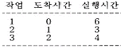
- 3
- 6
- 9
- 13
(정답률: 63%)
58. 다음 표는 고정 분할에서의 기억 장치 단편화 현상을 보이고 있다. 외부단편화(External Fragmentation)는 총 몇 K인가?(분할: 20,50,120,200,300 작업: 10,60,160,100,150)
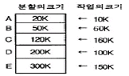
- 480 k
- 430 k
- 260 k
- 170 k
(정답률: 52%)
59. 분산 운영체제의 설명으로 옳지 않은 것은?
- 시스템 변경을 위한 점진적인 확대 용이성
- 고가의 하드웨어에 대한 여러 사용자들 간의 공유
- 빠른 응답시간
- 향상된 보안성
(정답률: 72%)
60. 분산 운영체제의 구조 중 완전 연결(Fully Connection)에 대한 설명으로 옳지 않은 것은?
- 모든 사이트는 시스템 안의 다른 모든 사이트와 직접 연결된다.
- 사이트들 간의 메시지 전달이 매우 빠르다.
- 기본비용이 적게 든다.
- 사이트 간의 연결은 여러 회선이 존재하므로 신뢰성이 높다.
(정답률: 74%)
4과목: 소프트웨어 공학
61. 서로 관련 있는 데이터와 연산자를 하나로 묶어서 프로그램의 컴포넌트로 재사용할 수 있는 개념을 무엇이라고 하는가?
- 추상화(abstraction)
- 캡슐화(encapsulation)
- 정보은폐(information hiding)
- 인스턴스(Instance)
(정답률: 74%)
62. 소프트웨어 개발 모형 중 나선형 모델의 활동 과정이 아닌 것은?
- 계획 및 정의
- 위험분석
- 개발
- 유지보수
(정답률: 54%)
63. 효과적인 S/W 프로젝트 관리를 위한 3가지 관심 초점 사항(3P)이 아닌 것은?
- 사람(People)
- 문제(Problem)
- 산출물(Product)
- 프로세스(Process)
(정답률: 75%)
64. 객체지향 설계에 있어서 정보은폐(information hiding)의 가장 근본적인 목적은?
- 코드를 개선하기 위하여
- 프로그램의 길이를 짧게 하기 위하여
- 고려되지 않은 영향(side effect)들을 최소화 하기위하여
- 인터페이스를 최소화하기 위하여
(정답률: 69%)
65. 소프트웨어의 위기를 해결하기 위해 개발의 생산성이 아닌 유지보수의 생산성으로 해결하려는 방법을 의미하는 것은?
- 소프트웨어 재사용
- 소프트웨어 재공학
- 클라이언트/서버 소프트웨어 공학
- 전통적 소프트웨어공학
(정답률: 65%)
66. 검증시험(Validation Test)을 하는데 있어 Beta Test에 대한 설명으로 옳은 것은?
- 사용부서에서 개발담당자가 시험한다.
- 개발부서와 사용부서가 공동으로 시험한다.
- 개발부서에서 개발자가 시험을 한다.
- 실업무를 가지고 사용자가 직접 시험한다.
(정답률: 62%)
67. 블랙박스 검사에 관하여 기술한 것 중 잘못된 것은?
- 모듈의 구조보다 기능을 검사한다.
- 동치 분할(equivalence partitioning)이라는 기법을 사용한다.
- Nassi-Shneiderman 도표를 사용하여 검정기준을 작성할 수 있다.
- 원인-결과 그래프(cause and effect graph)로 테스트케이스를 작성할 수 있다.
(정답률: 47%)
68. DFD 의 설명으로 옳지 않은 것은?
- Bubble Chart라고도 부른다.
- 구성 요소 중 종착지는 원으로 표시한다.
- DFD 작성시 정확한 이름을 사용하고 자료 보존 법칙을 준수한다.
- 처리공정과 이들 간의 자료흐름을 그래프 형태로 도형화하여 표현한 것이다.
(정답률: 60%)
69. 일정 계획과 관계가 먼 것은?
- 작업 분해
- CPM 네트워크
- 프로그램 명세서
- 간트 차트(Gannt Chart)
(정답률: 52%)
70. NS(Nassi-Schneiderman) chart에 대한 설명으로 거리가 먼 것은?
- 논리의 기술에 중점을 둔 도형식 표현 방법이다.
- 연속, 선택 및 다중 선택, 반복 등의 제어논리 구조로 표현한다.
- 주로 화살표를 사용하여 논리적인 제어구조로 흐름을 표현한다.
- 조건이 복합되어 있는 곳의 처리를 시각적으로 명확히 식별하는데 적합하다.
(정답률: 48%)
71. 다음 중 Boehm의 S/W 품질 특성에 포함되지 않는 것은?
- 이식성
- 복잡성
- 유지 보수성
- 사용 편이성
(정답률: 70%)
72. COCOMO(COnstructive COst MOdel) 모형에 대한 설명으로 옳지 않은 것은?
- 산정 결과는 프로젝트를 완성하는데 필요한 man-month로 나타난다.
- Boehm이 고안한 개발비 산정 모델로 프로젝트의 예상되는 크기와 유형에 관한 정보가 주로 사용된다.
- 프로젝트 특성을 15개로 나누고 각각에 대한 승수 값을 제시하였다.
- 각 모델별로 개발되어지는 프로젝트 개발유형에 따라 object mode, dynamic mode, function mode 의 3가지 모드로 구분한다.
(정답률: 48%)
73. 소프트웨어 개발을 위한 프로그래밍 언어의 선정기준으로 거리가 먼 것은?
- 개발담당자의 경험과 지식
- 대상업무의 성격
- 과거의 개발실적
- 4세대 언어 여부
(정답률: 64%)
74. CASE(Computer Aided Software Engineering)에 관한 설명으로 거리가 먼 것은?
- 소프트웨어 공학의 여러 작업들을 자동화하는 것이다.
- 소프트웨어 수명주기의 어느 부분을 지원하느냐에 따라 organic case, semi-detached case, embeded case로 분류할 수 있다.
- 소프트웨어 시스템의 문서화 및 명세화를 위한 그래픽 기능을 제공한다.
- 자료흐름도 등의 다이어그램을 쉽게 작성하게 해주는 소프트웨어도 CASE 도구이다.
(정답률: 43%)
75. 소프트웨어 재사용에 가장 많이 이용되는 것은?
- Data
- Test Case
- Source Code
- Project Plan
(정답률: 64%)
76. 결합도 단계 순서(약 -> 강)를 바르게 표시한 것은?
- stamp coupling→data coupling→control coupling→common coupling→content coupling
- data coupling→stamp coupling→control coupling→common coupling→content coupling
- content coupling→stamp coupling→control coupling→common coupling→data coupling
- control coupling→data coupling→stamp coupling→common coupling→content coupling
(정답률: 51%)
77. 소프트웨어공학이 나타나게 된 배경과 관계가 먼 것은?
- S/W 비용의 증가
- 유지보수 비용의 감소
- S/W 품질과 생산성의 재고
- 특정 개인에 의존한 시스템 개발
(정답률: 60%)
78. 유지보수의 활동 종류로 볼 수 없는 것은?
- 정정(Corrective) 보수
- 품질(Quality) 보수
- 적응(Adaptive) 보수
- 예방(Preventive) 보수
(정답률: 53%)
79. 람보우(Rumbaugh)의 객체지향 분석절차를 바르게 나열한 것은?
- 객체 모형 → 동적 모형 → 기능 모형
- 객체 모형 → 기능 모형 → 동적 모형
- 기능 모형 → 동적 모형 → 객체 모형
- 기능 모형 → 객체 모형 → 동적 모형
(정답률: 54%)
80. 하향식 통합 테스트에 있어서 모듈간의 통합시험을 하기위해 일시적으로 필요한 조건만을 가지고 임시로 제공되는 시험용 모듈을 무엇이라고 하는가?
- build
- stub
- alpha
- cluster
(정답률: 52%)
5과목: 데이터 통신
81. 다음에서 프로토콜의 구성 요소가 아닌 것은?
- 엔티티(entity)
- 구문(syntax)
- 의미(semantic)
- 타이밍(timing)
(정답률: 57%)
82. TCP/IP에 관한 설명 중 옳지 않은 것은?
- TCP/IP 프로토콜은 인터넷 프로토콜로도 불리 운다.
- IP는 데이터의 전달을 위해 연결성 방식을 사용한다.
- TCP는 데이터 전달의 신뢰성을 위해 연결성 방식을 사용한다.
- UDP는 데이터의 전달을 위해 비연결성 방식을 사용한다.
(정답률: 48%)
83. ARQ(Automatic Repeat Request) 방식의 설명으로 가장 올바른 것은?
- 에러를 검출만 하는 방식
- 부호를 전송하고, 반복하는 방식
- 데이터나 정보의 에러에 대비하는 방식
- 에러를 검출하고, 재전송을 요구하는 방식
(정답률: 70%)
84. 전송제어 절차를 바르게 나타낸 것은?
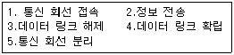
- 1→4→2→3→5
- 5→4→3→1→2
- 2→1→3→4→5
- 4→2→1→3→5
(정답률: 78%)
85. 1계층에서 3계층 사이의 프로토콜이 서로 다른 네트워크를 상호 접속하는 것은?
- 허브
- 리피터
- 브리지
- 라우터
(정답률: 44%)
86. 5개의 서브넷을 브리지로 이용할 때 전송 가능 회선은 몇 개가 필요한가?
- 12
- 10
- 8
- 6
(정답률: 70%)
87. "모든 스테이션이 중앙 스위치에 연결된 형태로 두 스테이션은 회선교환에 의해 통신을 행한다." 위의 내용은 무엇을 설명한 것인가?
- 토폴로지
- 토큰링
- 성형망
- 토큰버스
(정답률: 64%)
88. 모뎀이 6개 비트를 각 신호 변화에 전송하고, 2400baud에서 동작한다면 모뎀의 속도는?
- 2,400bps
- 4,800bps
- 9,600bps
- 14,400bps
(정답률: 67%)
89. 가상회선방식에서 통신망 내의 트래픽 제어의 원활한 흐름을 위해 망 내의 노드와 노드 사이에 전송하는 패킷의 양이나 속도를 규제하는 제어의 이름은?
- 오류제어
- 순서제어
- 흐름제어
- 경로제어
(정답률: 77%)
90. 통신회선을 직접 보유 혹은 임대하여 사용하고, 정보 전달 및 새로운 가치를 부가하며, 다음 그림과 같은 기능에 따른 계층으로 분류되는 통신망과 가장 관계있는 것은?
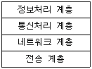
- LAN
- WAN
- ISDN
- VAN
(정답률: 52%)
91. 다음 시분할 다중화기 중 종류가 다른 하나는?
- 동기 시분할 다중화기
- 비동기 시분할 다중화기
- 지능적 시분할 다중화기
- 통계적 시분할 다중화기
(정답률: 39%)
92. 여러 개의 채널들이 하나의 통신 회선을 통하여 결합된 신호의 형태로 전송되고 수신측에서 다시 이를 여러 개의 채널 신호로 분리하는 역할을 수행하는 장비는?
- 모뎀(Modem)
- 게이트웨이(Gateway)
- 다중화 장비(Multiplexer)
- 라우터(Router)
(정답률: 55%)
93. LAN 분류시 매체 접근 방식에 따른 분류에 해당하지 않는 것은?
- CSMA/CD
- Token Ring
- Token Bus
- LLC(Logical Link Control)
(정답률: 63%)
94. 어떤 신호 f(t)를, f(t)가 가지는 최고 주파수의 2배 이상으로 채집하면, 채집된 신호는 원래의 신호가 가지는 모든 정보를 포함한다는 이론은?
- 표본화
- 양자화
- 부호화
- 이진화
(정답률: 45%)
95. 사용 가능한 주파수 대역을 나누어서 통화로를 할당하는 방식은?
- 주파수 분할 다중화
- 시분할 다중화
- 진폭 분할 다중화
- 통계적 다중화
(정답률: 79%)
96. HDLC(High level Data Link Control)의 동작 모드가 아닌 것은?
- 정규 응답 모드(NRM:Normal Response Mode)
- 비동기 응답 모드(ARM:Asynchronous Response Mode)
- 비동기 평형 모드(ABM:Asynchronous Balanced Mode)
- 동기 응답 모드(SRM:Synchronous Response Mode)
(정답률: 51%)
97. 터미널과 컴퓨터 사이에 RS-232C를 이용하여 직접 접속하는 모뎀의 이름은?
- 널(Null) 모뎀
- 동기식 모뎀
- 비동기식 모뎀
- 인터페이스 모뎀
(정답률: 36%)
98. 송신 스테이션이 데이터 프레임을 연속적으로 전송해 나가다가 NAK를 수신하게 되면 에러가 발생한 프레임을 포함하여 그 이후에 전송된 모든 데이터 프레임을 재전송하는 방식은?
- Stop-and-wait ARQ
- Go-back-N ARQ
- Selective-Repeat ARQ
- Non Selective-Repeat ARQ
(정답률: 64%)
99. HDLC로 알려진 데이터링크 제어 프로토콜의 플래그(flag)에 대한 설명으로 옳지 않은 것은?
- 프레임의 목적과 기능을 나타낸다.
- 동기화에 사용된다.
- 프레임의 시작과 끝을 표시한다.
- 항상 01111110의 형식을 취한다.
(정답률: 39%)
100. 데이터 통신 프로토콜에 대한 설명으로 거리가 먼 것은?
- ISO의 OSI 7계층 구조가 일반적으로 사용되는 프로토콜이다.
- 계층 구조를 독립화하여 설계 및 유지보수가 간편하다.
- 시스템 간의 상호 접속을 위한 개념을 규정한다.
- 하위 1계층만이 네트워크 중계 운영을 담당한다.
(정답률: 75%)